傑斯塔後山
如此舒服的床鋪和房間，又洗了如此暢快的熱水澡，這一夜睡得很香甜，早上就稍微任性賴床一下，下次可以睡在床上不知道又是什麼時候了。
起床後把握珍貴的資源，再去洗一次熱水澡，把這幾天的份通通都洗完。
東西都整理完之後，火車廂的餐廳已經開始營業了，除了晚餐之外也兼賣早餐。
跑去廚房直接看有什麼好吃的比看菜單好懂，聽到平底鍋煎肉發出的滋滋聲，廚房裡瀰漫著美食的味道。
手指頭比了比平底鍋，我要吃這個>"<給我給我
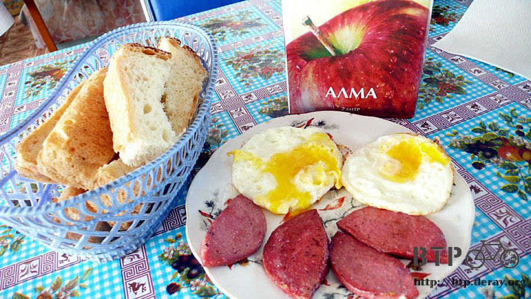
老闆娘順便還煎了兩顆荷包蛋，再從冰箱拿出一大盒的蘋果汁，配上麵包，好久沒有吃這樣西式的早餐了。
吃飯的時候除了吃自己的東西，也會很在意別人點了些什麼好吃的。
看到鄰桌的客人在吃好像很好吃的湯麵，也跟著要了一碗，裡面是馬鈴薯、麵條跟雞肉，湯是清香的雞湯。

早餐吃得非常豐盛，兩公升裝的果汁實在喝不完，就卡在小多水壺架的地方沿路帶著慢慢喝。
再舒適的地方還是要有離開的時候，雖然不知道今天的目的地是哪裡，但還有很長的路要走呢。
沿續昨天的炎熱，今天似乎就是昨天的翻版，但是早上就颳著逆風，沒有優待的Happy Hour。
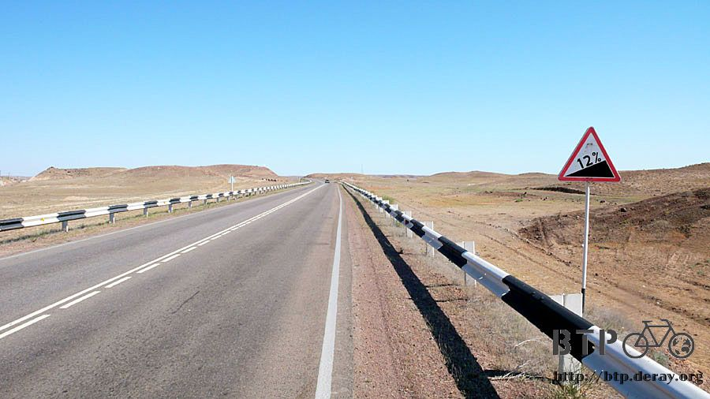
跟昨天有差異的就是路上的風景，右半邊是湖景，沿著湖騎車，但是馬路不是沿著湖而建設。
所以和湖的距離時遠時近，遠的時候根本就看不到湖在哪裡，近的話只要嫌天氣太熱就可以直接騎到湖裡面去涼快一下。
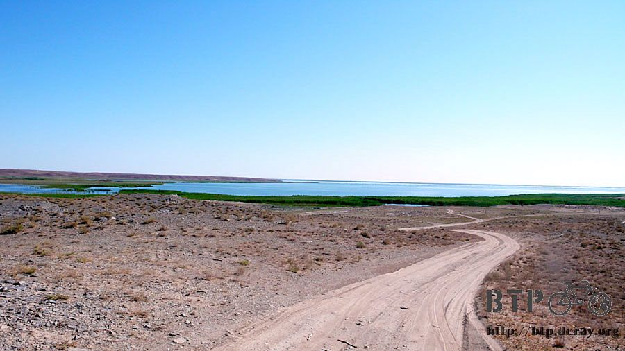
湖邊的水草很茂盛，像沼澤地那樣，各式各樣的鳥類發出不同的叫聲，昆蟲類也多得很驚人。
這幾天拉的都很稀，常常肚子痛一下馬上就要停車找地方躲起來大便，可能是因為吃什麼食物都被蒼蠅先吃過，喝的水也怪怪的，腸胃還不適應。
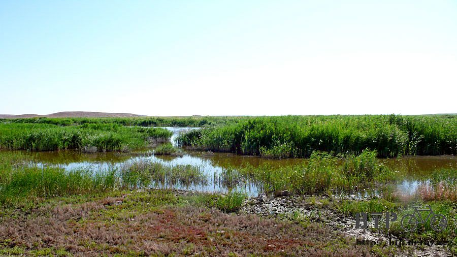
越接近首都，路上就比較多房子出現，都是獨棟出現在荒原之中，十公里左右就會出現一間餐廳、一間加油站或是一間旅館。
不見得每一個都會進去光顧，但是看到這些方便的店隨處可得，對接下來要騎的路也就比較心安。

超級迷你的小旅館，可惜今天落腳在此還嫌太早。
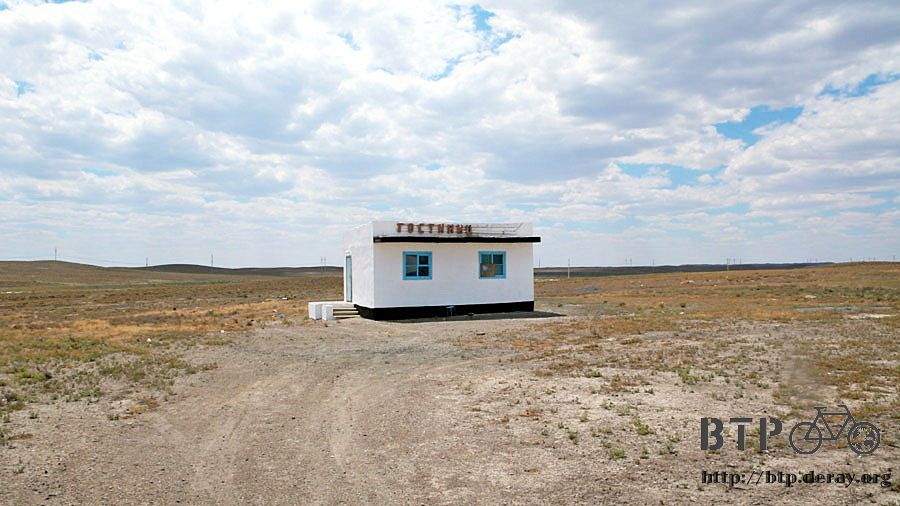
這個湖裡面一定有很多的魚，沿路上都是賣魚乾的小販，用小貨車當移動帳篷，簡單的桌子和招牌就在路邊營業起來。
魚都已經切好曬乾，每一條都很大隻，魚腥味超重的，買了也不知道該怎麼吃，但是貓咪一定很愛這種魚乾。

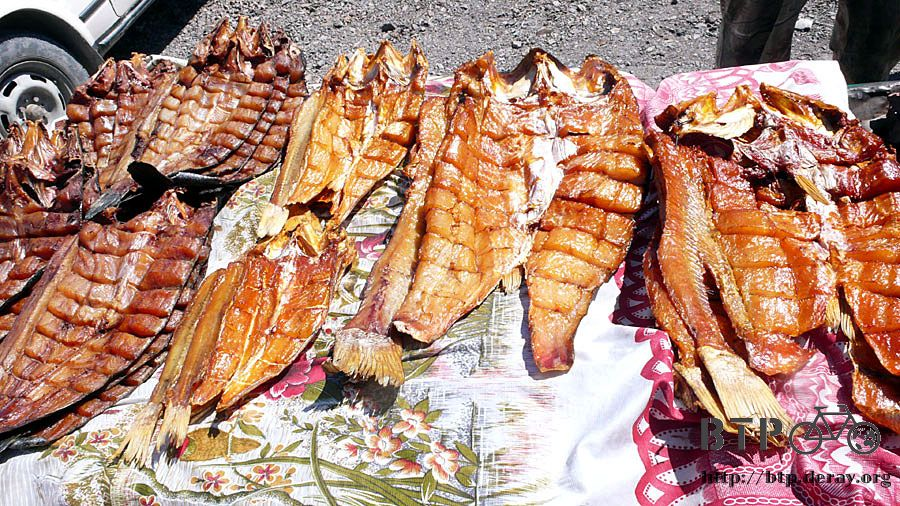
哈薩克的警察很喜歡把我攔下來，通常只是聊天而已，每次看到我都揮手叫我過去，哈拉幾句才放我走。
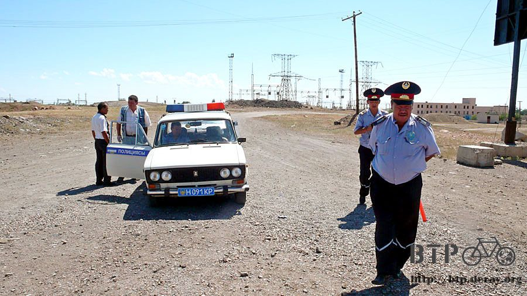
今天經過一個比較大的地方，因為有火車站設立在此，所以看起來比較繁榮，
但一樣就是那種矮矮的獨棟房子、很多的電線桿、廢棄車、輪胎，高樓大廈在此絕跡。

早上要走的時候，老闆娘打包了一些麵包給我當點心，中午的時候就窩在汽車等候站的陰影下吃麵包配果汁。
昨天洗好還沒乾的衣物就趁現再拿出來曬，酷熱加上大風，沒兩三下就乾了。

窩在汽車站裡，路過的車輛看到裡頭有人影，經過時都會停下來看一下我，感覺就是看我有沒有搭便車的需要，
就算不站在路邊攔車，車輛也會主動停下來，這裡真是搭便車旅行者的天堂。
午餐打發掉之後繼續騎車，被一輛載了三個人的小貨車攔下來。
本來它只是開在我旁邊跟我聊兩句，然後就往前開停在路邊等我，想好好跟我聊個夠。
咧嘴笑開的時候嘴裡都是金牙，這個國家應該有一個福利政策就是全國人民只要裝假牙，都是由政府補助，一律裝金牙。
拿出相機拍張照片，它們看到相機，很興奮的跑去汽車裡面拿出一把槍來>"<
槍在哈薩克是合法擁有的嗎？
有點皮皮銼，發抖的按下快門，好想在這張照片底下加註解：
『小多已經被我們挾持了，拿一百萬美金來贖回去。』

活人住的房舍雖然都很破舊，但逝去的人住的可都很漂亮，路邊不時會看到墓碑，也有像這樣的集中墓區，華麗又莊嚴。

沿著湖區騎車，離湖邊近一點的時候都會看到有人開著車在湖邊玩水。
之前到有水的地方，我都只是泡泡腳而已，這次我一定要找到地方整個人跳進去游泳～就當作明天的計劃好了。
又看到像是乾掉湖泊的景色，如果沒有乾掉的話，這條路就是貫穿湖泊而建，景色一定漂亮的讓人下巴都掉下來。


哈薩克這段路的海拔都不高，不像中國那樣有落差兩千多公尺的變化，幾乎都是維持在海拔兩、三百公尺，但是全都是起伏的山坡路。
下午在加油站喘口氣，有附設商店的高級加油站，老闆笑得很開心，仔細看的話就會看到滿口的金牙。

在這邊補充了預備糧食，為了好攜帶以及高熱量，所以挑了五條焦糖花生巧克力，先冰在這裡的冰箱，雖然等一下拿出來沒多久也是熱到融化。
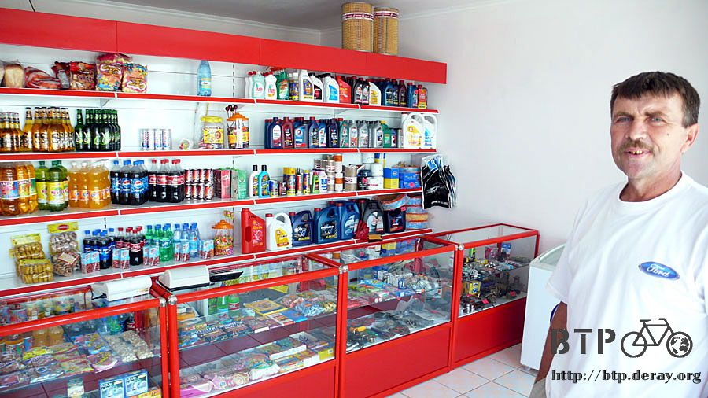
蒼蠅無所不在，加油站也是蒼蠅滿天飛，一邊揮趕一邊午睡根本就不可能，哈薩克人怎麼能忍受這麼多蒼蠅呢？
哈薩克人真的很厲害，就算蒼蠅在身上爬來爬去，也能若無其事的自處，就像牠們不存在一樣，會不停揮趕蒼蠅的人就只有我而已。
不只是嗡嗡嗡的很吵而已，會咬人的蒼蠅真是令人抓狂到無以復加的地步，如果我是科學家，我一定要發明一種消滅全世界蒼蠅的藥劑。
既然不讓我睡覺那就算了，跨上小多繼續往下騎，不論到哪個地方都還有一百多公里，遠的叫人沒力，騎到哪算到哪～
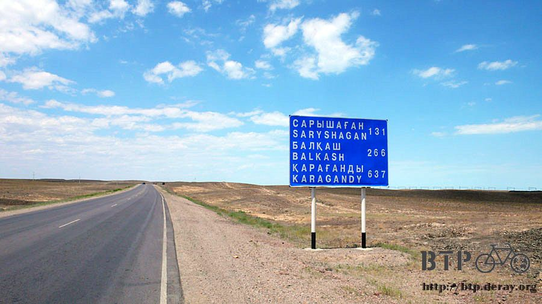
今天的雲還蠻多的，常常都會有雲朵飄在空中，遮住陽光灑下陰影，像這張照片中就看不到烈日的毒辣。
朵朵白雲無止境的延伸下去，很像是假的風景～
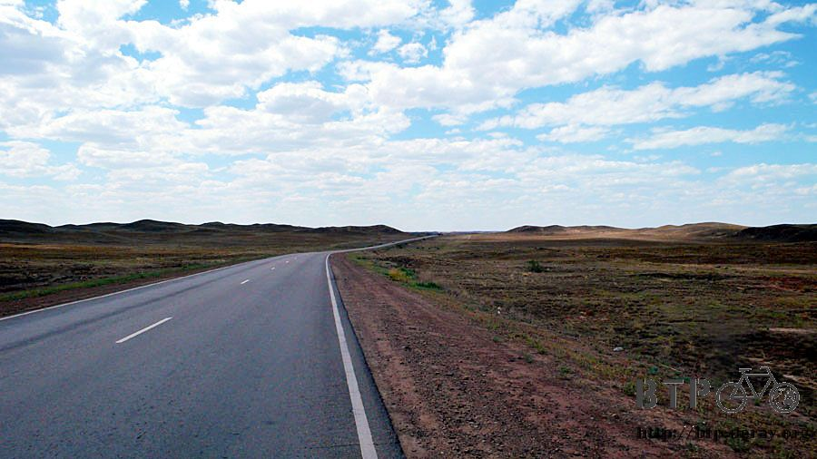
下午六點，在小店買一瓶可樂，這邊有養狗狗，但是這隻狗很乖，牠沒有追著我吠，是個有教養的好狗。
包包裡的糧食雖然所剩不多。依然大方的拆了一條熱狗給牠吃。


看著狗狗吃熱狗的樣子，自己也有點餓了起來，經營商店的同一家人也有開設餐廳，進去光顧吃晚餐。
每一張桌上都放著一盒雞蛋、幾包餅乾，不知道跟調味料一樣是自由取用，還是放在桌上賣的。

今天的廚師推薦料理是炸肉餅，裡頭是絞肉和洋蔥餡，配上麵包才吃得飽，只需要兩百塊錢。
飯後的奶茶則是免費招待，只要能忍受蒼蠅的騷擾，就可以待在餐廳裡插電整理遊記。

廚師是這個家的媳婦(左一)，叫做娜塔莎，二十二歲，有一個小孩，但是老公不知道為什麼在烏茲別克。
家裡的弟弟(左二)，發勒哈特，十三歲，烏茲別克和哈薩克的混血，他就負責黏著我問東問西就可以了。
右邊那一個身世有點不明，馬克斯，十五歲，似乎不是這個家的人但是住在一起，俄羅斯的血統，沒有家長可以管教，生性很不受拘束。

填飽肚子之後在外頭轉一轉，想找個晚上露營的好地方，看到橋下的平地好像不錯，雖然有很多瓶瓶罐罐的垃圾。
弟弟問我說今天要睡在哪裡？我指了指橋下。
他就拉著我去他們家，帶我到大家睡覺的地方，說今天我可以住在這邊，不用睡橋下那麼悽慘。

小多牽到餐廳內側，天天都在被帶到不同的人家裡住，臉皮有點越來越厚的感覺。 =..=
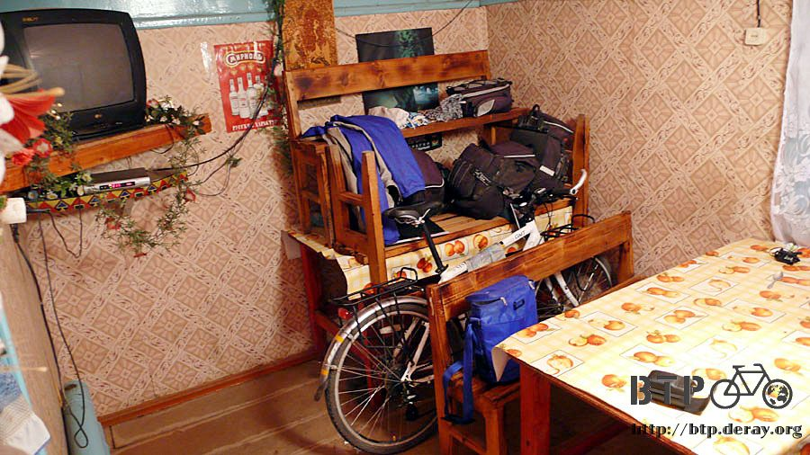
餐廳的生意在入夜之後生意很好，車輛排滿了門口，娜塔莎忙著招呼客人。

在門口遇到發勒哈特，他帶著我爬上傑斯塔小鎮後方的山頭。
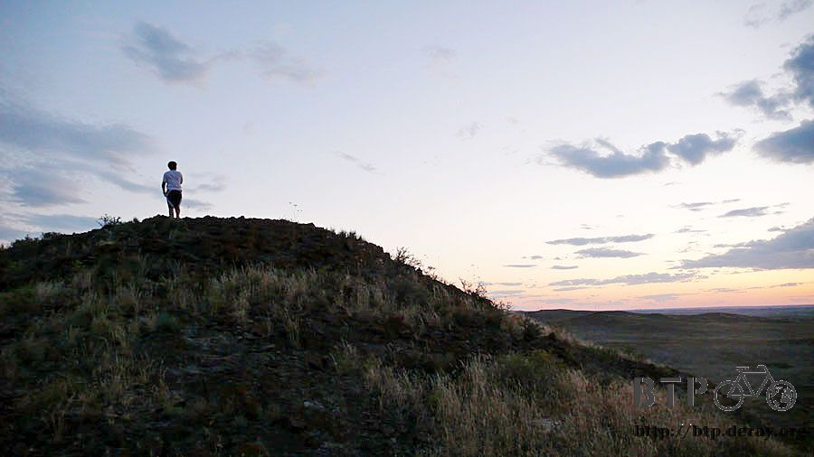
從這邊可以鳥瞰整個傑斯塔，就是一個小小的地方，地圖上找不到，路過可能也不會注意到，在落日的餘暉下更顯得渺小。
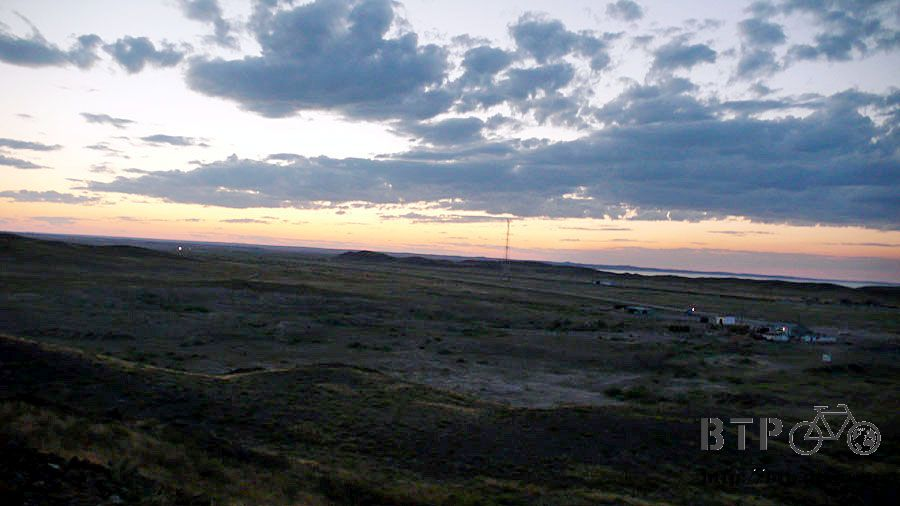
家裡的大人諸如爸爸、娜塔莎的老公、發勒哈特的哥哥，都在烏茲別克，只剩下女人、老人和小孩在顧店營生，餐廳入夜之後很忙，我跑去幫忙洗盤子，盡點微薄之力。
若不是每天都有好心的哈薩克人接濟我，這幾天的生活不知道該怎麼過，除了感恩還是感恩呀，努力洗盤子報恩吧。
睡覺的地方是鋪地毯的大通鋪，本來看到有電風扇很開心，結果入夜之後就被拿去別的地方了。
娜塔莎跟她的家人睡在旅行車的車廂裡面，這個小鎮至少有七成都是他們家的財產。
他們家還養了一隻馬、兩匹牛、三隻狗、四隻貓，不論什麼時候都會有動物從腳下走過。
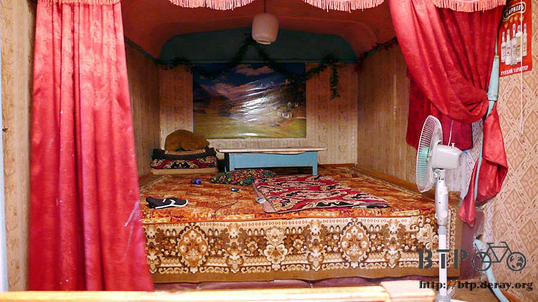
因為睡在餐廳的旁邊，蒼蠅很多，我就拿出了帳篷躲在裡面跟蒼蠅隔絕開來。
一頂好幾千塊的帳篷，居然不透氣，在裡面雖然不會被蒼蠅騷擾，但是熱得全身冒汗，帳棚都被汗給弄的濕答答的。
夜晚睡在帳篷裡面比白天騎車還要悶熱，但是一離開帳篷就是蒼蠅大軍在等著我~_~
後來實在熱得受不了，還是認命的爬出了帳篷，餐廳營業到清晨兩點，我直到那個時候才有辦法睡著，
這一夜睡著很悽慘，輾轉難眠的翻著身，不時都想著今晚說不定在橋下搭帳篷會涼快很多，也沒有蒼蠅可以煩我~_~
我要立志成為消滅蒼蠅的科學家。
繼續閱讀：7.3 今夜肯定涼快
哈薩克-堅戈－ 1：0.26 台幣
7.2 |
總計：1250元 |
早餐荷包蛋、火腿、蘋果汁、雞肉馬鈴薯湯440元、加油站冰淇淋、巧克力五條、餅乾460元、雜貨店可樂150元、晚餐炸肉餅200元 |
|